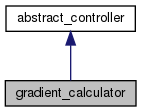

The gradient_calculator class provides method for assembling to gradient, which is used in the calculation of the new step-direction for controls in H^2 Sobolev-space. More...
#include <gradient_calculator.h>
Inheritance diagram for gradient_calculator:

Collaboration diagram for gradient_calculator:
Public Member Functions | |
| gradient_calculator (const char *filename) | |
| arma::mat | calculateGradient_forceControl_space_Hm_not_parallel (std::vector< std::unordered_map< coordinate_phase_space_time, double >> forwardPDF_time, std::vector< std::unordered_map< coordinate_phase_space_time, double >> backwardPDF_time, arma::mat control) |
| calculateGradient_forceControl_space_Hm_not_parallel calculates the gradient without using any parallelization; More... | |
| arma::mat | calculateGradient_forceControl_space_Hm (std::vector< std::unordered_map< coordinate_phase_space_time, double >> forwardPDF_time, std::vector< std::unordered_map< coordinate_phase_space_time, double >> backwardPDF_time, arma::mat control) |
| calculateGradient_forceControl_space_Hm calculates the gradient with parallelization More... | |
| arma::mat | calculateGradient_forceControl_space_Hm_plasma (std::vector< std::unordered_map< coordinate_phase_space_time, double >> forwardPDF_time, std::vector< std::unordered_map< coordinate_phase_space_time, double >> backwardPDF_time, std::vector< std::unordered_map< coordinate_phase_space_time, double >> forwardPDF_time_electrons, std::vector< std::unordered_map< coordinate_phase_space_time, double >> backwardPDF_time_electrons, arma::mat control) |
| calculateGradient_forceControl_space_Hm_plasma calculates the gradient with two different species (ions, electrons) present More... | |
 Public Member Functions inherited from abstract_controller Public Member Functions inherited from abstract_controller | |
| data_provider | getData_provider_optim () const |
| void | setData_provider_optim (const data_provider &value) |
Detailed Description
The gradient_calculator class provides method for assembling to gradient, which is used in the calculation of the new step-direction for controls in H^2 Sobolev-space.
Member Function Documentation
◆ calculateGradient_forceControl_space_Hm()
| arma::mat gradient_calculator::calculateGradient_forceControl_space_Hm | ( | std::vector< std::unordered_map< coordinate_phase_space_time, double >> | forwardPDF_time, |
| std::vector< std::unordered_map< coordinate_phase_space_time, double >> | backwardPDF_time, | ||
| arma::mat | control | ||
| ) |
calculateGradient_forceControl_space_Hm calculates the gradient with parallelization
- Parameters
-
forwardPDF_time backwardPDF_time control
- Returns
◆ calculateGradient_forceControl_space_Hm_not_parallel()
| arma::mat gradient_calculator::calculateGradient_forceControl_space_Hm_not_parallel | ( | std::vector< std::unordered_map< coordinate_phase_space_time, double >> | forwardPDF_time, |
| std::vector< std::unordered_map< coordinate_phase_space_time, double >> | backwardPDF_time, | ||
| arma::mat | control | ||
| ) |
calculateGradient_forceControl_space_Hm_not_parallel calculates the gradient without using any parallelization;
- Parameters
-
forwardPDF_time backwardPDF_time control
- Returns
◆ calculateGradient_forceControl_space_Hm_plasma()
| arma::mat gradient_calculator::calculateGradient_forceControl_space_Hm_plasma | ( | std::vector< std::unordered_map< coordinate_phase_space_time, double >> | forwardPDF_time, |
| std::vector< std::unordered_map< coordinate_phase_space_time, double >> | backwardPDF_time, | ||
| std::vector< std::unordered_map< coordinate_phase_space_time, double >> | forwardPDF_time_electrons, | ||
| std::vector< std::unordered_map< coordinate_phase_space_time, double >> | backwardPDF_time_electrons, | ||
| arma::mat | control | ||
| ) |
calculateGradient_forceControl_space_Hm_plasma calculates the gradient with two different species (ions, electrons) present
- Parameters
-
forwardPDF_time backwardPDF_time forwardPDF_time_electrons backwardPDF_time_electrons control
- Returns
The documentation for this class was generated from the following files:
- /home/jan/Promotion_linuxPC/Optim_VSTRAP/src/optimization/gradient_calculator.h
- /home/jan/Promotion_linuxPC/Optim_VSTRAP/src/optimization/gradient_calculator.cpp